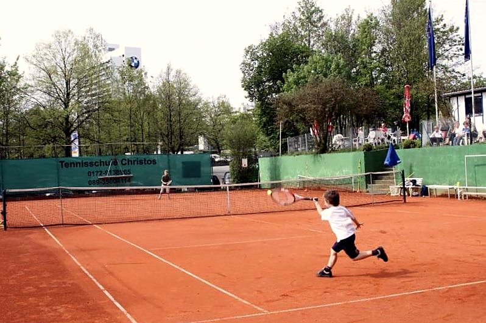
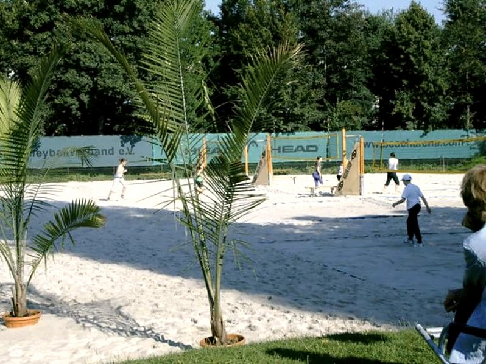
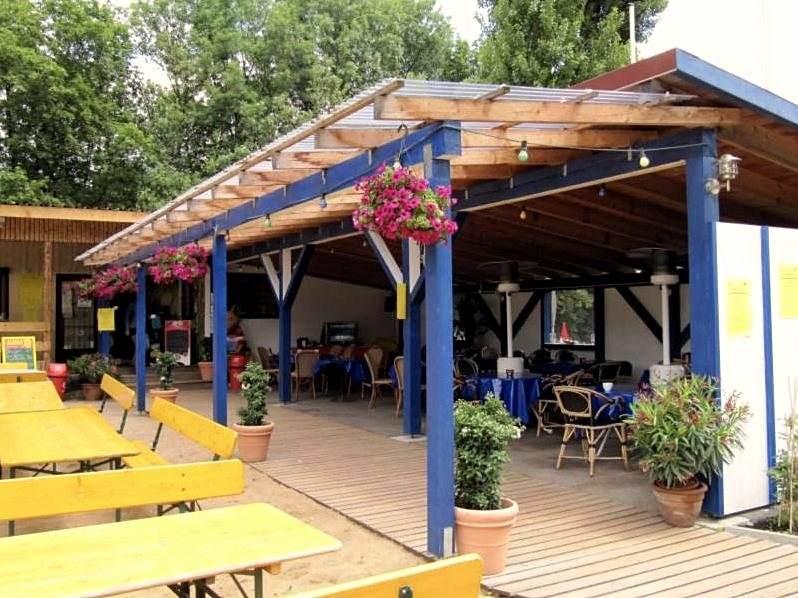

Fünf Sandplätze an der Beach-Arena
Im Münchner Norden, direkt an der U6 Studentenstadt: Sandplätze vor hohen Bäumen, Beachfelder mit Palmen und ein Biergarten mit Sonnenterrasse.

Die Sandplätze
Fünf Sandplätze bilden das Herz der Anlage. Hier trainiert im Sommer die Tennisschule, hier spielen die Mannschaften, und hier treffen sich die Mitglieder zu den Turnieren des Vereins.



Beachfelder mit Palmen
Neben den Tennisplätzen liegen die Beachfelder der Beach-Arena. Mitglieder spielen hier Beachvolleyball, Beachtennis, Beachbadminton und Beachsoccer. In den Sommerferien gibt es Tennis- und Beachsportcamps.
- Beachvolleyball
- Beachtennis
- Beachbadminton
- Beachsoccer

Bistro, Terrasse und Service
Café, Bistro und Beach-Biergarten liegen direkt an den Plätzen. Wer nur schnell eine neue Saite braucht, wird auch fündig.
- Tennisstüberl mit Sonnenterrasse
- Café, Bistro und Beach-Biergarten
- Verkauf von Tenniszubehör
- Bespannservice
Sommer auf Sand, Winter in der Halle
Sommer
Tennisanlage bei der Beach-Arena
Föhringer Ring 5, 80805 München
U6, Haltestelle Studentenstadt
Winter
Winterspielbetrieb in der Halle
Tennishalle bei Iphitos, Aumeisterweg 10
80805 München
Hallenstandort laut Website der Tennisschule. Bitte im Zweifel bei Christos nachfragen.
Anreise
Föhringer Ring 5, 80805 München. Die Anlage liegt im Münchner Norden an der Beach-Arena.
- U-Bahn
- U6, Haltestelle Studentenstadt
- Auto
- Parkplätze direkt an der Anlage
- Winter
- Tennishalle bei Iphitos, Aumeisterweg 10, 80805 München
Der Link öffnet OpenStreetMap. Erst dann werden Daten an diesen Dienst übertragen.